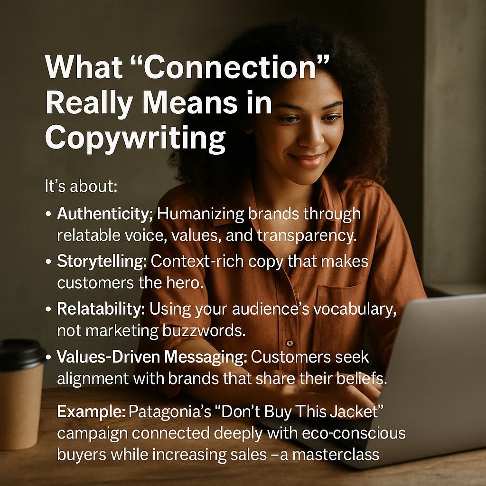
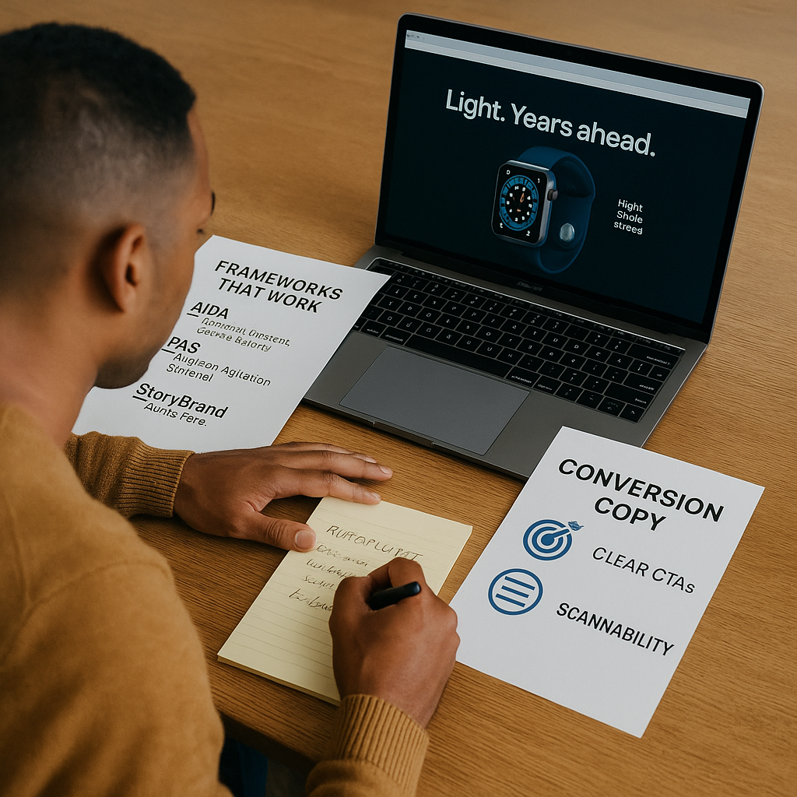
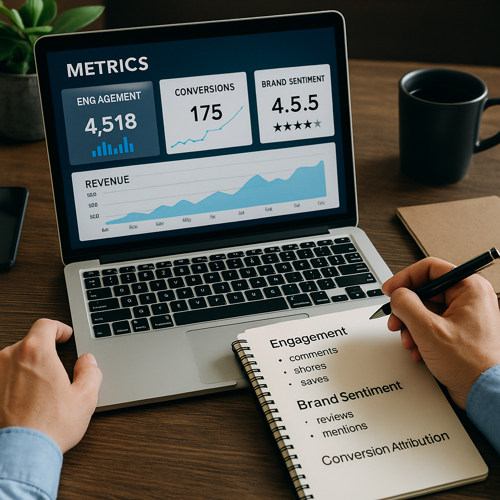
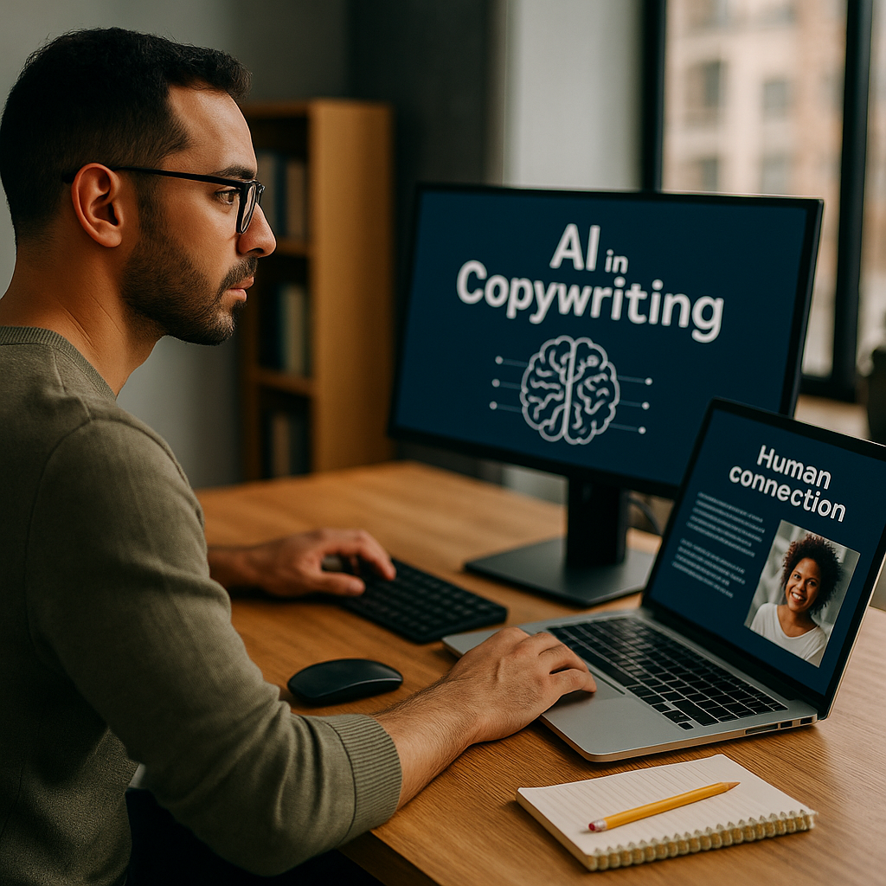
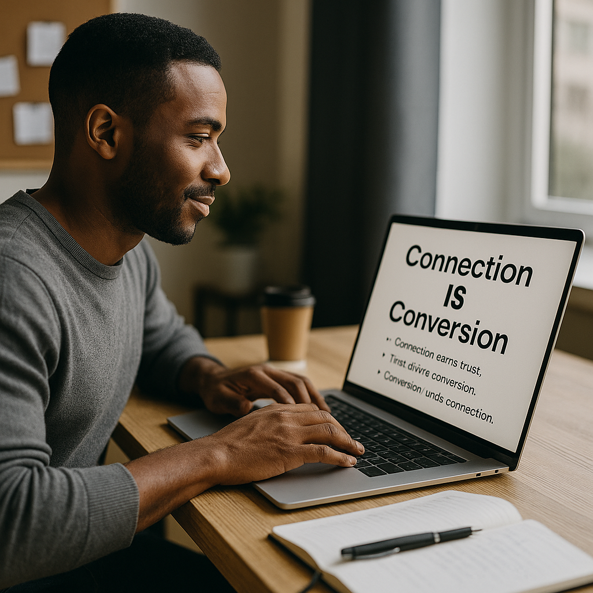

For years, I thought copywriting was a tug-of-war: you could either write emotionally resonant copy that built connection or laser-focused messaging that drove conversions.
Many marketers still treat these as separate goals: brand storytelling for “feelings,” sales pages for “action.”
But modern audiences are too discerning for that dichotomy.
Consumers don’t just want to feel something; they want proof.
And they don’t just want proof; they want to trust the brand behind it.
In today’s world, copy that truly works is empathetic, trustworthy, and strategically persuasive.
🧩 The Psychology of Connection and Conversion
Copy that connects taps into identity, belonging, and emotion; copy that converts addresses clarity, value, and urgency.
- 🔑 Emotion drives decisions. People buy because of how they feel.
- 🔍 Logic justifies purchases. Facts, social proof, and guarantees close the loop.
- 🧠 Cognitive ease matters. Audiences value simplicity and language they trust.
Conversion and connection aren’t opposites.
They’re symbiotic.
Connection builds trust, and trust accelerates conversion.
💡 What “Connection” Really Means in Copywriting

Connection isn’t about flowery language or over-sharing.
It’s about:
- Authenticity: Humanizing brands through relatable voice, values, and transparency.
- Storytelling: Context-rich copy that makes customers the hero.
- Relatability: Using your audience’s vocabulary, not marketing buzzwords.
- Values-Driven Messaging: Customers seek alignment with brands that share their beliefs.
Example: Patagonia’s “Don’t Buy This Jacket” campaign connected deeply with eco-conscious buyers while increasing sales—a masterclass in value-driven messaging.
🎯 What “Conversion” Copy Really Looks Like

Copy that converts focuses on clarity over cleverness.
🛠️ Frameworks that work
- AIDA (Attention, Interest, Desire, Action)
- PAS (Problem, Agitation, Solution)
- StoryBrand (Brand as guide, customer as hero)
🎯 Clear CTAs
Make action frictionless, not pushy.
🔍 Scannability
Headlines, bullet points, and bold statements for busy readers.
Example: Apple’s product pages balance simple, emotional headlines (“Light. Years ahead.”) with clean, feature-rich sections for decision-makers.
🔗 The Connection-to-Conversion Ladder
This simple ladder framework merges both approaches:
- Hook With Empathy: Start with their pain, desire, or vision.
- Deliver Value: Educate, inform, or inspire before you sell.
- Build Trust: Use testimonials, data, or credentials.
- Offer Transformation: Show results and outcomes clearly.
- Make It Easy to Act: Place bold, specific CTAs without overwhelm.
This creates a natural flow:
Connection lowers resistance.
Conversion closes the gap.
🧘 Tone and Voice: Walking the Tightrope
Tone is the magic bridge between connection and conversion:
- Conversational yet confident copy is human and trustworthy.
- Overly emotional or “salesy” tones repel skeptical audiences.
- Use microcopy—error messages, checkout instructions, captions—to build trust in subtle moments.
📊 Metrics That Measure Both Trust and Sales

If you’re only tracking clicks and CTR, you’re missing the big picture.
Pair revenue metrics with relationship metrics:
- 📈 Engagement depth: Replies, comments, shares, and saves.
- 💬 Brand sentiment: Reviews, mentions, NPS scores.
- 🧭 Conversion attribution: Story-driven content often influences purchases indirectly—track that journey.
🛠️ Actionable Writing Tips for Hybrid Copy
- Start Human, End Clear: Begin with empathy, end with actionable clarity.
- Layer Social Proof Naturally: Avoid “proof dumps”; weave testimonials into storytelling.
- Write for Skimmers and Deep Readers: Use structure, spacing, and summaries.
- Test CTA Tone: “Start Your Journey” vs. “Buy Now” can change perception.
- Personalize Without Creeping:Data should make customers feel understood, not stalked.
🌟 Brands That Nail the Balance
- Patagonia: Leads with values, sells through action.
- Slack: Simple, conversational landing page copy that highlights user benefits over features.
- Warby Parker: Blends storytelling with crystal-clear product copy.
🔮 The Future: AI and the Human Edge

AI tools streamline production but lack the nuanced empathy that drives connection.
Writers will become brand storytellers and strategists, while AI handles drafts, ideation, and testing.
The brands that win will use AI to scale without losing their human edge.
✨ Conclusion: Connection IS Conversion

We must abandon the idea that connection and conversion are opposing forces.
They’re two parts of the same equation:
- Connection earns trust.
- Trust drives conversion.
- Conversion funds connection.
The best copy doesn’t sell at all.
It simply makes readers feel understood and empowered to act.